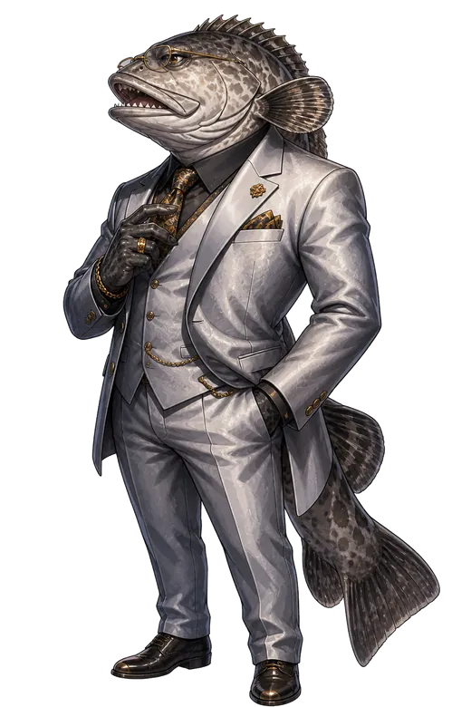
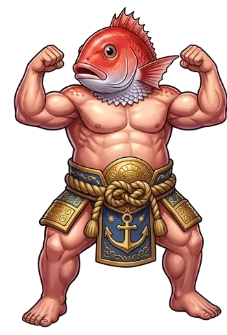
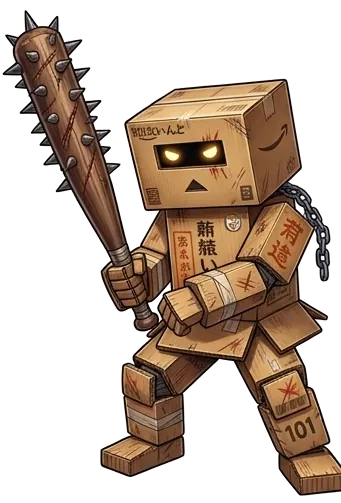
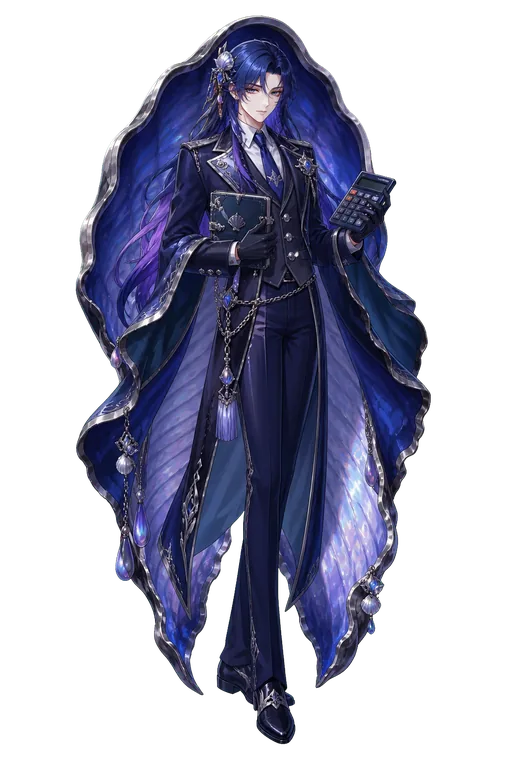

本日の品書き


同じ海の、同じ顔ぶれ
ジャンルはバラバラでも、出てくる顔ぶれはだいたい同じ。あっちで敵だったやつが、こっちでは仲間やったりします。
-

クエ
金の匂いには敏感な、スーツの大魚。
- チヌクエスト
- 資本主義（社長）
-

暴君マダイ
筋肉で全部解決しようとする。
- チヌクエスト
- 海の回廊
- 資本主義（船長）
-

ダンボール男
中身は誰も知らない。
- チヌクエスト
- 海の回廊
- 資本主義（店員）
-
ウサギン
かわいい顔して、手は真っ赤。
- チヌクエスト
- 海の回廊
- 資本主義（店員）
-
お肉
関西弁でよう喋る。接客させたら店が回る。
- チヌクエスト
- 海の回廊
- 資本主義（店員）
-
紫の魔女ホフク
麻雀牌を操る魔女。帳簿付けもやたら速い。
- チヌクエスト
- 海の回廊
- 資本主義（店員）
-
少女A
牌を投げて戦い、銀行では融資を審査する。
- チヌクエスト
- 海の回廊
- 資本主義（銀行員A）
-
Q
鉄道を愛する、丁寧語の紳士。数字にも強い。
- チヌクエスト
- 海の回廊（道具屋）
- 資本主義（税理士）
-

ムール
ルールはルール。延滞税もきっちり取る。
- チヌクエスト
- 資本主義（調査官）
-
サーティー
ピンチになると現れる、黒コートの助っ人。
- チヌクエスト（助っ人）
- 資本主義（不動産屋）
-
ヒトデ
一つ目で、だいたい舌が出てる。
- チヌクエスト
免責事項・ご利用にあたって
「ちぬのいけす」と掲載している各ゲーム（以下「本サイト等」）は、ちぬが個人で制作・運営している非営利・無料の趣味の作品です。遊んでいただく前に、以下をご確認ください。本サイト等を利用した時点で、以下に同意いただいたものとします。
- 無保証・現状有姿での提供。本サイト等は開発途中の作品を「そのまま」の状態で公開しています。動作・内容・正確性・安全性・特定の目的への適合性について、いかなる保証もしません。不具合やバランスの偏り、予告のない仕様変更があります。
- セーブデータ・アカウントについて。進行状況はお使いのブラウザ、または制作者が借りているサーバー（Cloudflare・GitHub Pages・Firebase など第三者のサービス）に保存されます。ブラウザのデータ削除、端末やブラウザの変更、ホーム画面アイコンの削除、サーバー側の障害・仕様変更・データのリセットなどにより、進行状況やアカウントが予告なく消えることがあります。バックアップや復旧には対応できない場合があります。
- パスワードについて。アカウントを作るゲームでは、他のサービスで使っているパスワードを使い回さないでください。ログイン情報の管理は各自の責任でお願いします。
- 損害について。本サイト等の利用、または利用できなかったことにより生じた損害（データの消失、通信料、端末の不調、時間の損失、精神的損害、第三者とのトラブルなど）について、制作者は故意または重大な過失がある場合を除き、一切の責任を負いません。
- 通信量・端末について。画像・音楽・動画を含むため、読み込み時にまとまった通信量が発生します。モバイル回線でのご利用は契約プランにご注意ください。また、古い端末やブラウザでは動作しない、または重くなることがあります。
- オンライン要素について。対戦や協力プレイなど、他の利用者と関わる機能では、相手の言動や接続状況について制作者は関与できません。迷惑行為・なりすまし・不正操作・サーバーへの過度な負荷をかける行為はお控えください。確認した場合、予告なく利用を制限することがあります。
- パロディ・既存作品への言及について。作中に登場する名称・人物・設定はフィクション、またはパロディ・オマージュです。実在の個人・団体・作品とは関係なく、権利者による公認や協力を受けたものでもありません。「チヌクエスト」はカルドセプト等へのオマージュを含む非公式作品であり、本家の権利者とは無関係です。権利者からの申し出があった場合は、速やかに修正または削除します。
- 素材・音楽について。グラフィックや音楽の一部はAI生成ツールを用いて制作しています。楽曲「オルタナティヴ・ブルー」「闇の鼓動に身を委ね」は新谷望様（六堂猟奇星ロンド）の提供による楽曲で、権利は作曲者に帰属します。その他の素材の無断転載・二次配布はご遠慮ください。
- 外部リンクについて。本サイト等から他のサイトへ移動した先の内容について、制作者は責任を負いません。
- 年齢・健康について。未成年の方は保護者の方と相談のうえ遊んでください。長時間の連続プレイは避け、体調が優れないときは休んでください。点滅する光や急な動きの演出が含まれる場合があります。
- プライバシーについて。本サイトはアクセス解析や広告のためのトラッキングを行っていません。ゲーム内で入力されたアカウント名などは、ゲームの動作に必要な範囲でのみサーバーに保存されます。
- 公開終了・改訂について。各ゲームおよび本サイトは、予告なく内容の変更、公開の一時停止・終了を行うことがあります。本免責事項も予告なく改訂することがあり、改訂後は本ページに掲載した時点で効力を持ちます。
不具合の報告やご意見、権利に関するご連絡は GitHub までお願いします。
最終更新：2026年10月18日